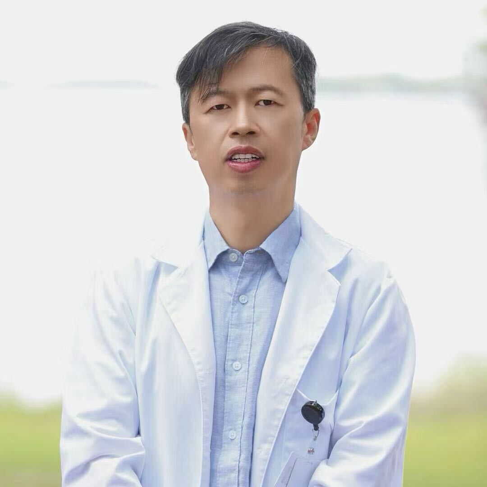
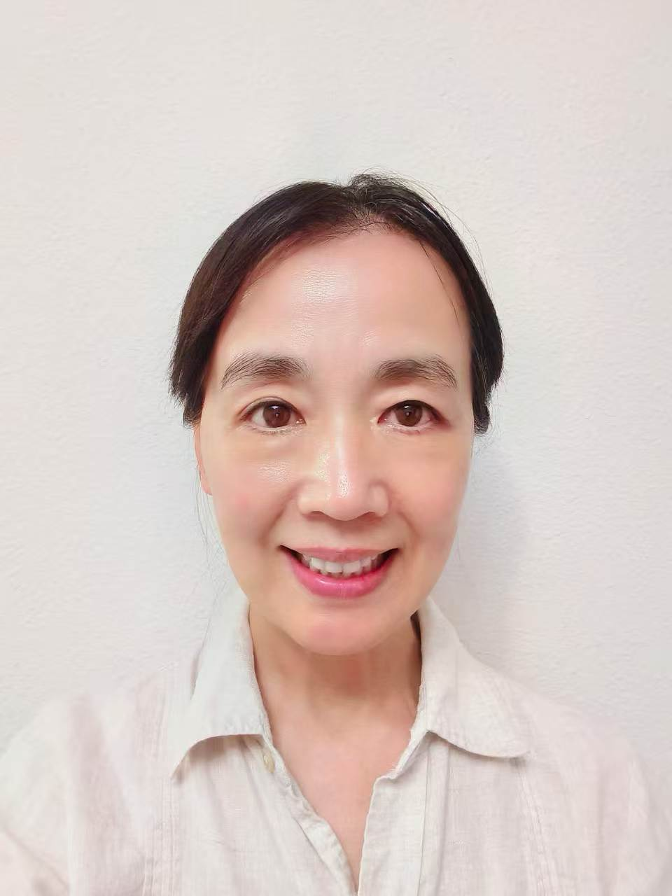

Advanced Acupuncture Platform · North America
Plataforma de Acupuntura Avanzada · Norteamérica
北美前沿针灸技术平台
If you've been told there's nothing more that can be done — there is. We connect you with practitioners using China's most advanced acupuncture techniques.
Find Relief NowSi le han dicho que ya no hay nada más que hacer — sí lo hay. Le conectamos con profesionales que utilizan las técnicas de acupuntura más avanzadas de China.
Encuentre Alivio AhoraWhen you book your first appointment through Harmony Pain Alliance, you receive an exclusive discounted rate — automatically applied, no code needed.
Cuando reserve su primera cita a través de HPA, recibirá una tarifa con descuento exclusivo — aplicada automáticamente, sin necesidad de código.
通过和衡疼痛联盟预约您的第一次门诊，即可享受专属优惠价格——自动生效，无需优惠码。
Book Now & Save at Lei's Acupuncture Reserve Ahora y Ahorre 立即预约并享受优惠For patients who were told recovery has limits.
Para pacientes que les dijeron que la recuperación tiene límites.
给那些被告知"康复有极限"的患者。
For patients who have tried everything else.
Para pacientes que han probado todo lo demás.
给那些"什么方法都试过了"的患者。
Additional Areas of Care: Insomnia & sleep disorders · Anxiety, stress & emotional health · Pelvic floor recovery · Fertility support · Aesthetic acupuncture · General wellness & preventive care
Áreas Adicionales: Insomnio · Ansiedad y estrés · Recuperación del suelo pélvico · Fertilidad · Acupuntura estética · Bienestar general
其他诊疗方向：失眠与睡眠障碍 · 焦虑、压力与情绪健康 · 盆底肌修复 · 辅助生育 · 针灸美容 · 整体健康与预防保健
Great Techniques Should Have No Borders.
Las Mejores Técnicas No Deberían Tener Fronteras.
好技术不应该有国界。
Elite Acupuncture Stimulation Therapy · 东方针法
Elite Acupuncture Stimulation Therapy · 东方针法
东方针法 · Elite Acupuncture Stimulation Therapy
A precision-based needling system designed for complex, chronic, and treatment-resistant conditions. EAST targets the root of dysfunction with minimal intervention and maximum clinical effect.
Un sistema de punción de precisión diseñado para condiciones complejas, crónicas y resistentes al tratamiento.
以精准为核心的针法体系，专为复杂、慢性及难治性病症而设计。以最小干预实现最大临床效果。
Best for
Indicado para
适用范围
Fu's Subcutaneous Needling · 浮针疗法
Punción Subcutánea de Fu · 浮针疗法
浮针疗法 · Fu's Subcutaneous Needling
A modern evolution of traditional needling, FSN works at the subcutaneous fascial layer to rapidly release myofascial trigger points and restore movement. Results are often immediate within a single session.
Una evolución moderna de la punción tradicional. FSN trabaja en la capa fascial subcutánea para liberar rápidamente los puntos gatillo miofasciales.
现代针法的重要突破，浮针作用于皮下筋膜层，快速松解肌筋膜触发点，恢复运动功能。
Best for
Indicado para
适用范围
Shu-Heng Needling System · 竖横针法
Sistema de Punción Shu-Heng · 竖横针法
Shu-Heng Needling System
An advanced neuro-rehabilitation protocol integrating vertical and horizontal needling strategies to support neurological recovery and functional restoration.
Un protocolo avanzado de neurorrehabilitación que integra estrategias de punción vertical y horizontal.
融合竖刺与横刺策略的高级神经康复方案，支持神经功能恢复与运动功能重建。
Best for
Indicado para
适用范围
The three technique systems are curated and promoted by HPA. Lei Dong received systematic professional training in all three systems in China and continues ongoing advanced training there.
Los tres sistemas técnicos son seleccionados y promovidos por HPA. Lei Dong recibió formación profesional sistemática en los tres sistemas en China y continúa su formación avanzada allí.
上述三大技术体系由 HPA 甄选并推广。磊医师在中国接受这三大体系的系统化专业训练，并定期回中国持续深造。
Our network is growing — and every clinic in it brings something the others don't.
Nuestra red está creciendo — y cada clínica en ella aporta algo que las demás no tienen.
我们的网络正在生长——每一家加入的诊所，都带来独一无二的东西。
Winter Garden, Florida
HPA's founding partner clinic. Led by Lei, who practices EAST, FSN, Shu-Heng and pursues ongoing advanced training in China in all three systems.
La clínica fundadora de HPA. Dirigida por Lei, quien practica EAST, FSN, Shu-Heng y continúa su formación avanzada en China en los tres sistemas.
HPA 创始合作诊所。由磊医师主理，他在临床中运用东方针法（EAST）、浮针疗法（FSN）、竖横针法三大体系，并定期回中国持续深造。
"The map starts with one clinic. It ends with a continent." — Haiyan Ma
"El mapa comienza con una clínica. Termina con un continente." — Haiyan Ma
"地图从一家诊所开始，终点是整个北美大陆。" — 马海燕
Apply for a Founding Clinic Spot Solicitar un Cupo de Clínica Fundadora 申请创始诊所名额
Acupuncture Physician · Founder, Lei's Acupuncture
Lei's clinical focus is neuro-acupuncture and complex pain management, with extensive clinical experience treating conditions that conventional medicine struggles to resolve.
"Every patient is unique. My goal is to restore function, reduce suffering, and improve quality of life with safe, effective acupuncture." — Lei DongBook an Appointment with Lei
Acupunturista · Fundador, Lei's Acupuncture
Lei se enfoca clínicamente en neuroacupuntura y manejo de dolor complejo, con amplia experiencia clínica tratando condiciones que la medicina convencional tiene dificultades para resolver.
"Cada paciente es único. Mi objetivo es restaurar la función, reducir el sufrimiento y mejorar la calidad de vida con acupuntura segura y efectiva." — Lei DongReservar una Cita con Lei
针灸医师 · Lei's Acupuncture 创始人
磊医师临床专攻神经针灸与复杂疼痛管理，在治疗常规医学难以有效处理的复杂病症方面拥有丰富的临床经验。
"每位患者都是独一无二的。我的目标是用安全、有效的针灸，帮助患者恢复功能、减轻痛苦、提升生活质量。" — 磊医师立即预约磊医师
Takes less than 1 minute. We'll confirm within 24 hours.
Toma menos de 1 minuto. Confirmaremos dentro de 24 horas.
不到1分钟完成。我们将在24小时内确认。
Not a physician. A bridge builder.
No es médica. Es constructora de puentes.
她不是医生，她是搭桥的人。

Winter Garden, Florida
Born and raised in China, she built a successful entrepreneurial career before relocating to the United States as a new immigrant — learning a new language, understanding a new culture, and navigating a healthcare system that operates by entirely different rules.
In China, acupuncture and TCM are mainstream medicine. In America, she saw patients living with conditions that had well-established solutions in China but were simply out of reach here.
She saw the distance.
She decided to be the bridge.
She doesn't treat patients. She builds bridges — connecting the right techniques, the right practitioners, and the people who need them most.
"The best business model: take altruism to the extreme — business is simply the result that follows." — Haiyan Ma
Nacida y criada en China, construyó una exitosa carrera empresarial antes de emigrar a los Estados Unidos — aprendiendo un nuevo idioma, comprendiendo una nueva cultura y navegando un sistema de salud completamente diferente.
En China, la acupuntura y la MTC son medicina convencional. En América, encontró pacientes con condiciones que en China tenían soluciones establecidas pero aquí simplemente no estaban al alcance.
Vio la distancia.
Decidió ser el puente.
No trata pacientes. Construye puentes — conectando las técnicas correctas, los profesionales correctos y las personas que más los necesitan.
"El mejor modelo de negocio: llevar el altruismo al extremo — el negocio es simplemente el resultado que sigue." — Haiyan Ma
她在中国成长，曾是一名成功的企业家。移民美国后，一切从零开始——重新学习语言、重新理解文化、重新认识一套截然不同的医疗体系。
在中国，针灸与中医是主流医疗。来到美国，她看到许多患者正忍受着在中国早有成熟解法、在这里却无处可寻的病症。
她看到了距离。
她决定做那座桥。
她不治病，她搭桥。把最好的技术、最合适的从业者、和最需要帮助的患者连接在一起。
"最好的商业模式：把利他做到极致，生意只是随之而来的结果。" — 马海燕
You have a clinical specialty that deserves to be seen. HPA's role is to find you, and then make sure the patients who need your expertise can find you too.
Tiene una especialidad clínica que merece ser vista. El papel de HPA es encontrarle, y luego asegurarse de que los pacientes que necesitan su experiencia también puedan encontrarle.
您有独特的临床专长，值得被更多人看见。HPA的职责是找到您，然后确保最需要您专长的患者也能找到您。
"We are looking for partners to define the future standard of acupuncture together." "Estamos buscando socios para definir juntos el futuro estándar de la acupuntura." "我们正在寻找一起定义未来针灸技术标准的合伙人。" — Haiyan MaApply to Become a Founding Clinic Solicitar ser Clínica Fundadora 立即申请成为创始诊所
Partner Clinics are quality licensed practitioners who join the HPA network to expand their reach and connect with new patients.
Las Clínicas Socias son profesionales licenciados de calidad que se unen a la red HPA para ampliar su alcance y conectar con nuevos pacientes.
合作诊所是加入HPA网络的优质持照从业者，通过平台扩大影响力、连接新患者。
Professional multilingual clinic website, built and optimized for North American patients.
Sitio web clínico multilingüe profesional.
专业三语诊所网站，针对北美患者搜索习惯优化。
Content strategy and execution across English, Spanish, and Chinese-speaking communities.
Estrategia de contenido en comunidades de habla inglesa, española y china.
覆盖英语、西班牙语及华语社区的内容策略与执行。
Hands-on advanced technique training delivered to your clinic through the HPA network.
Formación práctica en técnicas avanzadas en su clínica a través de la red HPA.
通过 HPA 合作网络，为诊所提供前沿针法实战培训。
All optional services are discussed and priced individually. Contact us to learn more.
Todos los servicios opcionales se discuten y cotizan individualmente. Contáctenos para más información.
所有可选服务均单独洽谈定价。联系我们了解详情。
From China · To North America De China · A Norteamérica 从中国 · 到北美
致每一位在中医领域深耕多年的老师：
我知道您有真本事。
数十年的临床积累，一套经过无数患者验证的技术体系，以及那些被您治好、却在其他地方求医无门的患者——这些是您最真实的资产。
但我也知道，好技术不一定能走出去。
语言是墙。
认证是门。
市场是迷宫。
很多时候，不是技术不够好，是通道还没打开。这正是我创立和衡疼痛联盟的原因。
好的合作不以一次交易定义，而以共同创造的长期价值衡量。这是HPA对每一位技术合伙人的承诺。我们希望建立的，是一种真正平等的长期合作关系——您带来技术的深度，我们提供市场的宽度，一起让中国最好的中医智慧，在北美生根。
我们对专科方向没有限制。无论您专注于疼痛、康复、美容、生育，还是其他任何领域——只要您的技术经得起临床验证，只要您真心希望帮助更多患者，我们就有共同的语言。
如果您有出海的念头，哪怕只是一个还不确定的想法——欢迎和我聊聊。
如果您有出海的念头，现在是最好的时机。
"我不是医生，我的使命是寻找最强的技术，通过HPA的力量，把它们种在北美的土壤里。" — 马海燕，创始人兼CEO
A Personal Invitation to TCM Masters Who Are Ready for the World:
You have spent years — perhaps decades — building something real. A clinical system that works. Patients who recovered when others couldn't help them. A body of knowledge that deserves to reach further than it currently does.
But great technique doesn't always travel easily.
Language is a wall.
Certification is a gate.
The market is a maze.
More often than not, it's not that the technique isn't good enough — it's that the pathway hasn't opened yet. That's exactly why Harmony Pain Alliance exists.
A great partnership is not defined by a single transaction — it is measured by the long-term value created together. That is HPA's commitment to every technology partner.
We don't limit by specialty. If your system is clinically proven and you genuinely want to help more patients, we have the foundation for a meaningful conversation.
If you've been thinking about taking your work global — now is the right time.
"My mission is to find the strongest technologies and, through HPA, plant them in North American soil." — Haiyan Ma, Founder & CEO
Una Invitación Personal para los Maestros de MTC Listos para el Mundo:
Ha pasado años — quizás décadas — construyendo algo real. Un sistema clínico que funciona. Pacientes que se recuperaron cuando otros no pudieron ayudarlos.
Pero la gran técnica no siempre viaja fácilmente.
El idioma es un muro.
La certificación es una puerta.
El mercado es un laberinto.
Una gran asociación no se define por una sola transacción — se mide por el valor a largo plazo creado juntos. Ese es el compromiso de HPA con cada socio tecnológico.
Si ha pensado en llevar su trabajo al mundo — ahora es el momento.
"Mi misión es encontrar las tecnologías más sólidas y, a través de HPA, plantarlas en suelo norteamericano." — Haiyan Ma, Fundadora & CEO
Harmony Pain Alliance is a platform that connects patients with carefully selected acupuncture clinics specializing in advanced TCM techniques. We bridge China's most cutting-edge clinical systems with North American practitioners, so you have access to care that goes beyond standard acupuncture.
Harmony Pain Alliance es una plataforma que conecta pacientes con clínicas de acupuntura cuidadosamente seleccionadas, especializadas en técnicas avanzadas de MTC.
和衡疼痛联盟是一个将患者与精选针灸诊所连接起来的平台，专注于引进中国最前沿的中医临床技术，为北美患者提供超越普通针灸的专业医疗服务。
Simply book your appointment through the HPA platform using the link on our website. Your discount is automatically applied — no code needed. Available for first-time patients only.
Reserve su cita a través de la plataforma HPA. Su descuento se aplica automáticamente — sin necesidad de código.
通过网站上的HPA专属链接直接预约即可，优惠自动生效，无需优惠码。仅适用于首次通过HPA平台预约的新患者。
Treatment fees vary by clinic and condition. Across our network, fees generally range from $80 to $300 per session. We recommend contacting your chosen clinic directly for specific pricing.
Las tarifas varían según la clínica, generalmente entre $80 y $300 por sesión.
各诊所收费不同，我们网络内的诊所费用范围约为每次 $80–$300。建议直接联系您选择的诊所确认具体收费。
Insurance coverage varies by clinic. Lei's Acupuncture currently accepts VA/Military benefits. For other insurance plans, we recommend contacting the clinic directly to confirm coverage before your visit.
La cobertura varía. Lei's Acupuncture acepta beneficios VA/Military. Para otros planes, contacte a la clínica.
保险报销情况因诊所而异。Lei's Acupuncture 目前已开通 VA/Military 保险报销。其他保险计划建议直接联系诊所确认。
Yes. When performed by a licensed, board-certified practitioner, acupuncture is a safe, minimally invasive treatment with an excellent safety record. All clinics in the HPA network are fully licensed and credentialed.
Sí. Realizada por un profesional licenciado y certificado, la acupuntura es un tratamiento seguro y mínimamente invasivo.
是的。由持照、委员会认证的从业者施针时，针灸是一种安全、微创的治疗方式。HPA网络内所有诊所均持有完整执照和资质认证。
Your first visit typically includes a detailed intake consultation, a review of your health history, and an initial treatment. We recommend arriving 10 minutes early. Please notify the clinic at least 24 hours in advance if you need to reschedule.
Su primera visita incluye consulta de evaluación, revisión de historial de salud y tratamiento inicial. Llegue 10 minutos antes.
首次就诊包括详细问诊评估、健康史回顾和初次治疗。建议提前10分钟到达。如需改期，请提前至少24小时通知诊所。
Use our Find by Condition tool to match your symptoms with the right practitioner, or use Find by Location to find a clinic near you. If you're unsure, contact us directly and we'll help guide you.
Use nuestra herramienta de búsqueda por condición o por ubicación. Si no está seguro, contáctenos directamente.
您可以按病症或按地点查找。如果不确定，请直接联系我们，我们会帮您匹配最合适的诊所。
Quick form — takes 30 seconds. You'll be redirected to the clinic's booking page next.
Formulario rápido — 30 segundos. Será redirigido a la página de reservas.
快速表单——30 秒完成，随后跳转到诊所预约页面。